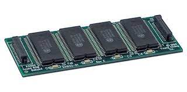

หน่วยความจำ
หน่วยความจำและสื่อบันทึกข้อมูลเป็นคำสองคำที่มักเข้าใจสลับกัน แต่ทั้งสองอย่างนี้เป็นอุปกรณ์ติดตั้งในคอมพิวเตอร์ที่แตกต่างกันหรือไม่ และมีผลต่อประสิทธิภาพในการทำงานของ PC แตกต่างกันหรือไม่ เพื่อพิจารณาว่าจะอัพเกรดหน่วยความจำหรือสื่อบันทึกข้อมูล สิ่งสำคัญคือคุณจะรู้ความแตกต่างของอุปกรณ์สองตัวนี้เสียก่อน
หน่วยความจำหรือ RAM (Random Access Memory) คืออุปกรณ์สำหรับประมวลผลและจัดการข้อมูลแบบต่อเนื่อง คอมพิวเตอร์ของคุณจะใช้ RAM เพื่อการสืบค้นข้อมูลในทันที เช่น แอพพลิเคชั่นที่กำลังเปิดทำงาน การแก้ไขเอกสาร Word หรือการเปิดอีเมล อย่างไรก็ตาม ข้อมูลในหน่วยความจำคอมพิวเตอร์จะสามารถสืบค้นได้ในช่วงเวลาสั้น ๆ เท่านั้น หากข้อมูลไม่ถูกบันทึกและจัดเก็บไว้ในสื่อบันทึกข้อมูลของคอมพิวเตอร์ ข้อมูลก็จะสูญหายเมื่อปิดคอมพิวเตอร์ลง
